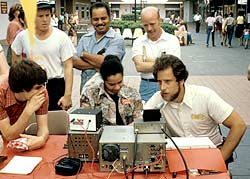

That's a good way to attract a crowd!
That's a good way to attract a crowd!
|
That's a good way to attract a crowd!
|
| We circled the wagons ... er ... tables ... |
| 14AVQ vertical on the roof. Can anyone imaging being able to do this now? |
| Some examples of "how far we can talk on the radio" |
|  Glenn, N3COB (ex-KA3DOO) makes a contact. |
| Mark,N4EOC knocking out a little ... CW???? |
| Dick, K3KDP (Where is he now ... ?) |
| Who's on the repeater? |
| K2KNC / Mobile (Now W2MZ) |